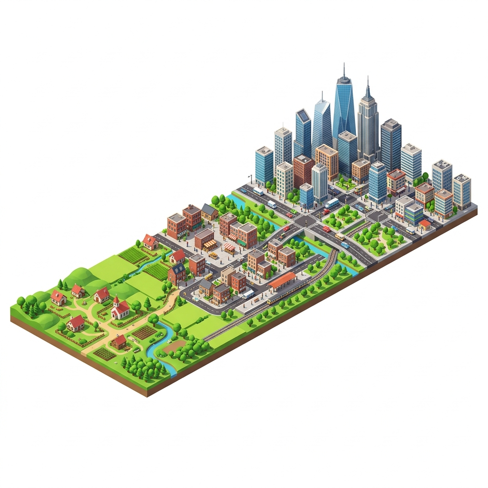
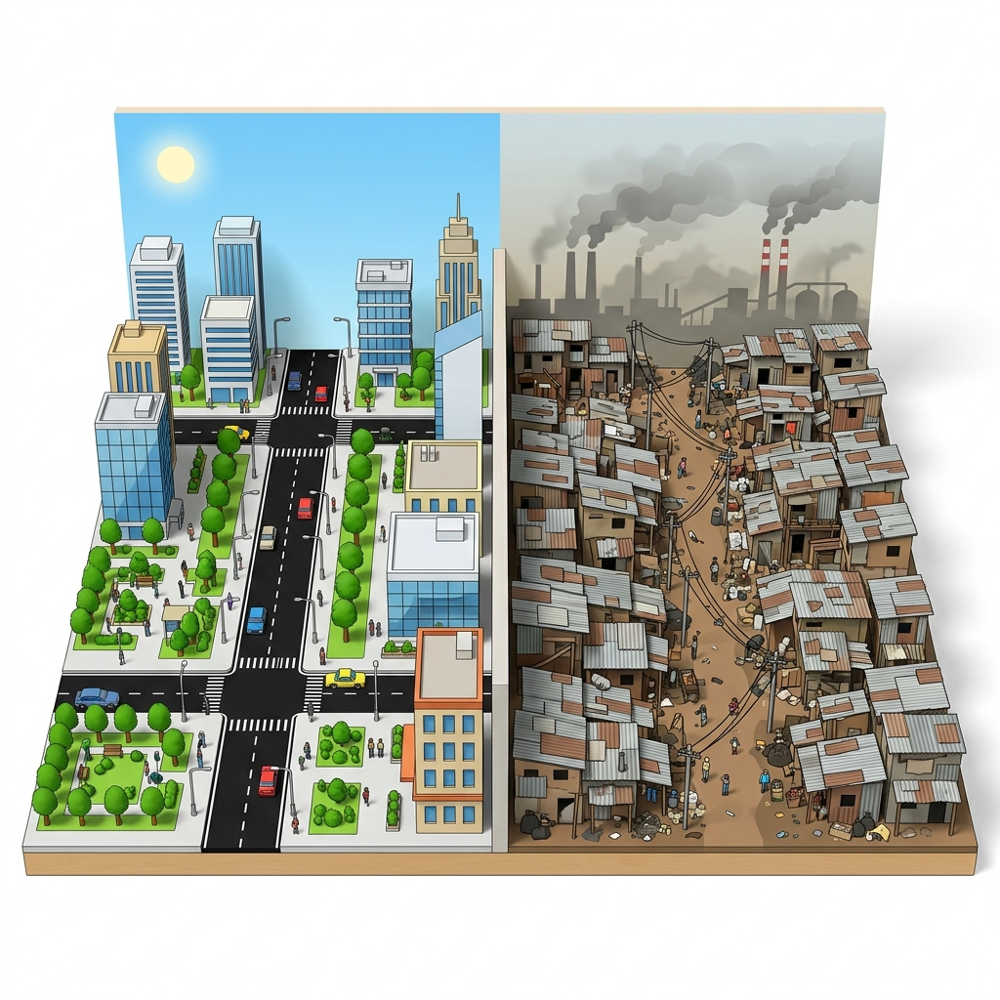

Vardaan Learning Institute
Class 8 Geography • Chapter Notes
🌐 vardaanlearning.com
📞 9508841336
Urbanisation - Causes and Effects
1. Introduction to Urbanisation

Concept
Urbanisation is the increase in the proportion of people living in towns and cities as
compared to those living in villages. It is the continuous process of the formation of towns and cities
and their growth in size.
The percentage of people living in urban areas is increasing across the globe. Some regions, such as Bermuda,
Monaco, and the Cayman Islands, have a 100% urban population, while many African countries
still have an urban population of less than 15%.
2. Causes of Urbanisation
Urbanisation primarily occurs as a result of people moving out from rural areas to urban areas. Several key
factors have facilitated this massive shift:
- The Industrial Revolution: Started in the late 18th century in England and spread to
Europe and North America. Factories created a huge demand for labor, causing people to migrate from
villages for jobs.
- Modernisation: The modernization of urban areas made city life more attractive to rural
people, providing better amenities.
- Rural to Urban Migration: Fueled by push factors (poverty, lack of
employment, low standard of living, poor social amenities in villages) and pull factors
(better employment, higher living standards, better healthcare, education, recreation, and market
competition in cities).
- Natural Increase in Population: Urban areas have also grown because of high birth rates
coupled with comparatively lower death rates in cities.
- Trade and Commerce: The growth of business centers leads directly to the expansion of
cities.
- Transport and Communication: Better transportation facilities make it easier for people
to migrate and settle in urban centers.
Fact
According to a UN prediction, by the year 2030, 60% of the world
population will be living in urban areas.
3. Impact of Urbanisation

Urbanisation drastically changes the socio-economic conditions of a country, producing both positive benefits
and severe adverse effects.
Positive Impacts
- Cities offer a large number of services and job opportunities that are not available in
rural areas.
- Education, healthcare, and entertainment are more readily available.
- Cities have better infrastructure and generally offer a higher standard of living.
- Migration from various regions leads to an exchange of ideas and diversity of culture.
- Strict social and religious taboos tend to disappear with increasing urbanisation.
Adverse Impacts
- Increased Pollution: Urbanisation leads to severe air and water pollution.
- Unemployment: Overpopulation in cities results in unemployment and underemployment as
jobs fail to keep pace with migration.
- Public Health Crises: Overcrowding leads to unhygienic conditions and severe sanitation
issues.
- Slums: Severe shortages of housing in large cities cause the rapid growth of slums.
- Social Problems: Large cities experience poverty, violence, and increased crime rates.
- Family Breakdown: The high cost of living in urban areas can lead to the disintegration
of the joint family system.
4. Satellite Cities
Concept
Satellite Cities are small or medium-sized metropolitan areas that are located near
large cities but are mostly independent. Their main aim is to extend the large cities and maintain a
balance between the population and resources of an area.
Characteristics of Satellite Cities:
- They existed as cities before interconnecting with the larger metropolitan cities.
- They are separated from the larger cities by vast rural territories or major geographic barriers (like a
river).
- They are economically and socially independent from the central metropolis.
- They have their own Central Business District surrounded by residential areas.
- They possess their own independent municipal government.
- There is a lot of cross-commuting between the satellite city and the larger metropolis.
Examples: Brentwood (London), Gary (Chicago), Gurugram and Thane (Mumbai),
Salt Lake (Kolkata), and Yelahanka (Bengaluru).
5. Smart Cities
A smart city is an urban area that uses ICT (Information and Communications Technology) to
improve the efficiency of its services and meet the needs of its citizens.
Important Aim
The core aim of a smart city is to improve the quality of life, optimize resource use, improve contact
between city officials and citizens, and prepare the city to face future challenges.
Key Services Managed by ICT in Smart Cities:
- Transport and traffic management.
- Education and healthcare.
- Water supply and power distribution.
- Waste management and law enforcement.
Global Examples: Barcelona (Spain), Vienna (Austria), London (UK), Tokyo (Japan), Singapore.
Indian Examples (Smart Cities Mission): Ahmedabad, Bhopal, Chennai, New Delhi, Pune, and
Vishakhapatnam.